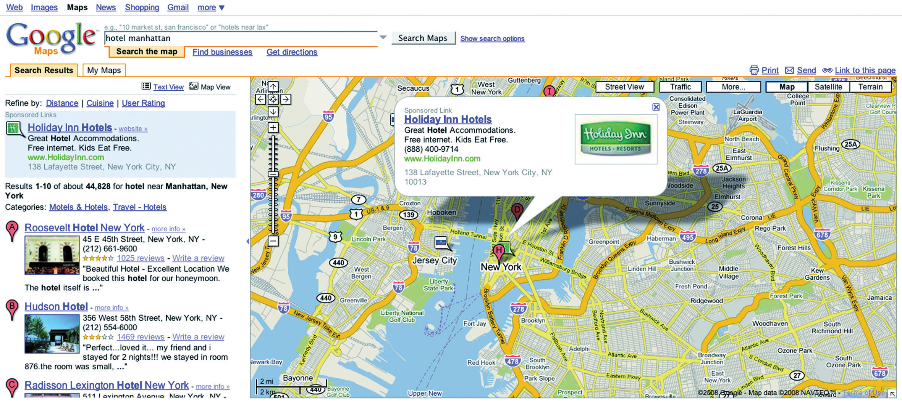
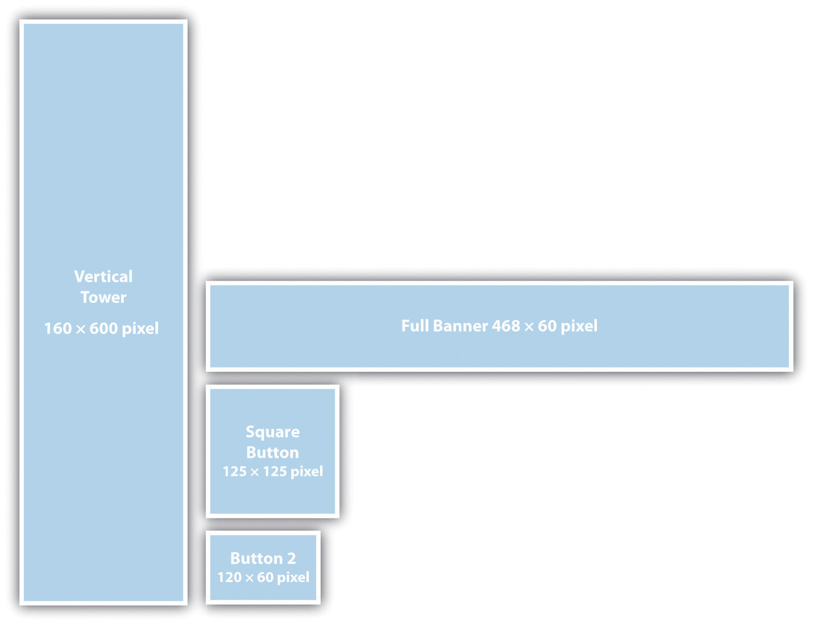
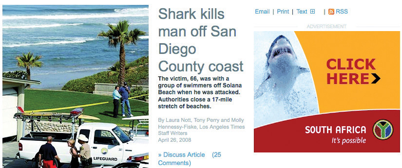
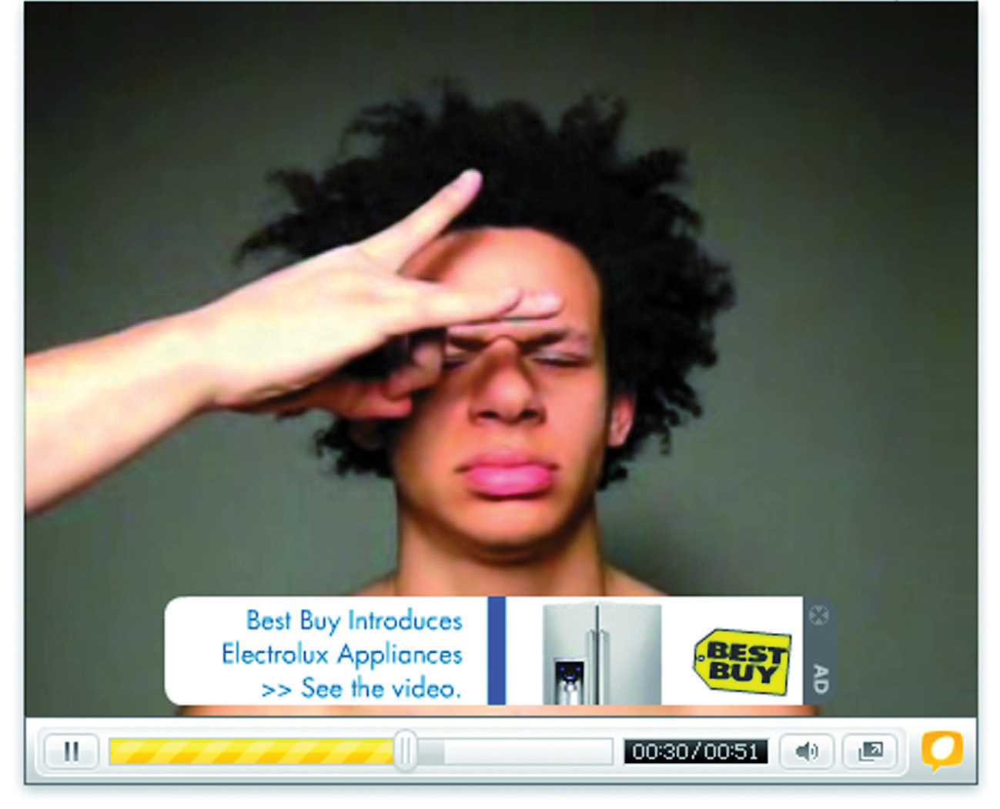

Simply put, online advertising is advertising on the Internet. Online advertising encompasses advertisements on search engine results pages, advertisements placed in e-mails, and other ways in which advertisers use the Internet. However, this chapter focuses on display advertising or rich-media advertising.
Whether online or off, the main objective of advertising is to increase sales. Advertising also aims to increase brand awareness. Advertising is based on the simple economics of supply and demand. Advertisers aim to stimulate a consumer need and then satisfy that need.
One of the greatest benefits of online display advertising is that the messages are not restricted by geography or time. Online advertisements are also much more interactive than offline advertising. While both online and offline advertising can be disruptive, interactive online advertising can be designed to be perceived as less so.
Online display advertising began as simple hyperlinked images shown on a Web site and has since progressed to include video, sound, and many other modern technologies. Today, messages and interactions can be contained within the advertising display without ever taking consumers to a landing page.
Although the Internet provides new scope for creative approaches to advertising, we see its true advantage when we realize how trackable, and therefore measurable, Internet advertising is. Or, to take it from Eric Schmidt, CEO of Google, “The Internet will transform advertising because of its trackability, not its beauty.”Rebecca Lieb, “Immersive Advertising (Three Days’ Worth),” ClickZ, October 25, 2002, http://www.clickz.com/showPage.html?page=1488101 (accessed May 1, 2008).
Online advertising rapidly followed the developing Internet. And, as consumers are increasingly spending more time online, and hours spent on the Internet start to eclipse hours spent watching television, the medium becomes increasingly important to any advertiser.
According to Wikipedia, the first clickable banner advertisement was sold to a law firm in 1993 by Global Network Navigator. HotWired, an early Web magazine, was the first to sell advertising space in large quantities to a number of advertisers. One of the very first advertisers was AT&T (a U.S. telecom company), which went online in October 1994.Wikipedia, s.v. “Web Banner,” http://en.wikipedia.org/wiki/Web_banner (accessed May 7, 2010).
Figure 3.1 An Early Banner Ad for AT&T
This was part of a campaign that AT&T was running to promote the Internet to consumers, and included television and outdoor advertising. Believe it or not, but this was cutting edge back in 1994!
As Web technology has developed, so has the technology that is used to create and serve advertising online.
Advertising, whether online or offline, has a number of objectives:
Making people aware of a brand or product is an important long-term goal for any marketer. Once customers know about the brand, the marketer has taken the first step toward gaining the customer’s trust and patronage. The better known a brand is, the more business they can do. And the ultimate goal is to do more business and sell more of the product.
Online, creative advertising or bannerAn online advertisement in the form of a graphic image that appears on a Web page. advertising is largely visual, making it an ideal channel for promoting brand collateral.
Consumers can’t want what they don’t know about. Advertising needs to convince consumers about what they should want and why they should want it. Modern online advertising provides a great way to communicate the USPs (unique selling points) of a product, thereby helping stimulate demand.
Once the consumer is aware of and desires a product, they need to find out how to satisfy that desire. If brand building has been effective, they will know that a particular brand exists. At this point, it is important for the marketer to show the consumer how their particular brand or product will best meet that need.
All forms of online marketing need to drive trafficThis refers to the visitors that visit a Web site. and sales in the long term. However, the immediacy of online advertising also drives traffic and sales in the short and medium terms. Unlike traditional media advertising, online advertising can turn the potential customer into an actual customer right there and then. What’s more, it is possible to measure accurately how effectively the online advertising campaign does this.
Online advertising is able to drive instant sales and conversions. Unlike offline advertising mediums, the consumer can go from advertisement to merchant in one easy click. Because of the connected nature of the Internet, online activities are highly trackable and measurable, which makes it possible to target advertisements and to accurately track and gauge the effectiveness of the advertising. Each display advertisement can be tracked for success.
There are many different ways to display messages online, and as technology develops, so does online advertising. Here are some of the most common.
Interstitial bannersBanners that are shown between pages on a Web site. are shown between pages on a Web site. As you click from one page to another, you are shown this advertisement before the next page is shown. Sometimes, you are able to close the advertisement.
As the name suggests, these are advertisements that pop up, or under, the Web page being viewed. They open in a new, smaller window. You will see a pop-upUnrequested window that opens on top of the currently viewed window. right away but will probably only become aware of a pop-under after you close your browser window. These were very prominent in the early days of online advertising, but audience annoyance means that there are now “pop-up blockers” built into most good Web browsers. This can be problematic as sometimes a Web site will legitimately use a pop-up to display information to the user.
A map advertisementThis is advertising placed within the online mapping solutions, such as Google Maps. is advertising placed within the online mapping solutions available, such as Google Maps.
Figure 3.2 Google Map Showing an Advertisement for Holiday Inn
A floating advertisementThis advertisement appears in a layer over the content, but is not in a separate window. appears in a layer over the content, but is not in a separate window. Usually, the user can close this advertisement. These are sometimes referred to as “Shoshkeles,” a proprietary technology. Floating advertisements are created with dynamic hypertext markup language (DHTML) or Flash and float in a layer above a site’s content for a few seconds. Often, the animation ends by disappearing into a banner ad on the page.
A wallpaper advertisementThis advertisement changes the background of the Web page being viewed. changes the background of the Web page being viewed. Usually, it is not possible to click through this advertisement.
Figure 3.3 Some of the Most Common Banners, Shown in Proportion
A banner advertisementA graphic image or animation displayed on a Web site for advertising purposes. is a graphic image or animation displayed on a Web site for advertising purposes. Static banners are graphics interchange format (GIF)An eight-bit-per-pixel bitmap image format using a palette of up to 256 distinct colors. GIFs allow images to be compressed for faster display time. or Joint Photographic Experts Group (JPEG)A file format commonly used for compression of photographic images. images, but banners can also employ rich mediaAdvertisements with which users can interact (as opposed to solely animation) in a Web page format. These advertisements can be used either singularly or in combination with various technologies, including but not limited to sound, video, or Flash, and with programming languages such as Java, JavaScript, and dynamic hypertext markup language (DHTML). such as Flash, video, JavaScript, and other interactive technologies. Interactive technology allows the viewer to interact and transact within the banner. Banners are not limited to the space that they occupy; some banners expand on mouseover or when clicked on.
When online, advertisements can be interactive. How do you think this can be used to increase the effectiveness of advertising?
As well as a variety of mediums, there are also a number of different payment models for display advertising.
Cost per impression (CPI)This means the advertiser pays each time the advertisement appears on the publisher’s page. means that the advertiser pays each time the advertisement appears on the publisher’s page. The most common way of referring to this model is cost per mille (CPM)Cost per thousand ad impressions. An advertiser pays each time a thousand impressions of their ad are shown., or cost per thousand impressionsThe number of times a Web page or ad is viewed. (the letter M is the Roman numeral for a thousand, or mille). This is how a campaign is normally priced when brand awareness or exposure is the primary goal.
Cost per click (CPC)When an advertiser only pays when their ad is clicked upon, giving them a visitor to their site—typically from a search engine in pay-per-click search marketing. means that the advertiser only pays when their advertisement is clicked on by an interested party. CPC advertising is normally associated with paid search marketing, also called pay-per-click (PPC) advertising. Banners can be priced this way when the aim is to drive traffic. It is also a payment method sometimes used in affiliate marketing, when the aim is to drive traffic to a new Web site.
In the cost per acquisition (CPA)The cost of acquiring a new customer. The advertiser only pays when a desired action is achieved (sometimes called cost per acquisition). model, the advertiser only pays when an advertisement delivers an acquisition. Definitions of acquisitions vary from site to site and may be a user filling in a form, downloading a file, or buying a product. CPA is the best way for an advertiser to pay because they only pay when the advertising has met its goal. For this reason it is also the worst type for the publisher as they are only rewarded if the advertising is successful. The publisher has to rely on the conversion rate of the advertiser’s Web site, something that the publisher cannot control. The CPA model is not commonly used for banner advertising and is generally associated with affiliate marketing.
Sometimes, owners of lower-traffic sites choose to sell banner space at a flat rateA fixed cost per month regardless of the amount of traffic or impressions., that is, at a fixed cost per month regardless of the amount of traffic or impressions. This would appeal to a media buyer who may be testing an online campaign that targets niche markets.
Cost per engagement is an emerging technology in which advertisers pay for the rollover advertisements, placed in videos or applications (such as Facebook applications), based on the interactions with that advertisement. “EngagementImplies a level of interaction and intent from the user.” is generally defined as a user-initiated rollover, or mouseover, action that results in a sustained advertisement expansion. Once expanded, an advertisement may contain a video, game, or other rich content. It happens without taking an Internet user away from her preferred Web page, and marketers only pay when an individual completes an action.
The word “engagement” implies a level of interaction and intent from the user. If you were using this type of advertising, how would you measure success?
CPM favors the publisher, while CPA favors the advertiser. Sometimes, a hybrid of the two payment models is pursued.
Typically, high-traffic, broad-audience Web sites will offer CPM advertising. Examples include Web portals such as http://www.yahoo.com or news sites like http://www.news24.com. Niche Web sites with a targeted audience are more likely to offer CPA advertising to advertisers with an appropriate product. These can also fall under the umbrella of affiliate marketing.
How do you think your campaign objectives would differ if you were advertising car insurance versus organic cat food? What sort of Web sites would you target for each?
Types of advertising can be seen on a scale from more intrusive (and thus potentially annoying to the consumer) to less intrusive. In the same way, payment models can be scaled to those that favor the publisher to those that favor the advertiser. When planning a campaign, it is important to know how the advertising will be paid for and what kinds of advertising are offered by publishers. A lot of this can be solved by using a company that specializes in advertisement serving, media planning, and media buying.
Advertising can be paid for in a number of ways, including the following:
Ad serversThe delivery of ads by a server to an end user’s computer on which the ads are then displayed by a browser or cached. Ad serving is normally performed either by a Web publisher or by a third-party ad server. Ads can be embedded in the page or served separately. are servers that store advertisements and serve them to Web pages. Ad servers can be local, run by a publisher to serve advertisements to Web sites on the publisher’s domain, or they can be third-party ad servers that serve advertisements to Web pages on any domain. Ad servers facilitate advertisement trafficking and provide reports on advertisement performance.
An advertising network is a group of Web sites on which advertisements can be purchased through a single sales entity. It could be a collection of sites owned by the same publisher (e.g., AOL, CNN, and Sports Illustrated are all owned by AOL/Time Warner), or it could be an affiliation of sites that share a representative.
The advertising network acts as an intermediary between advertisers and publishers and provides a technology solution to both. As well as providing a centralized ad server that can serve advertisements to a number of Web sites, the networks offer tracking and reporting, as well as targeting.
Rather than distribute copies of each piece of creative advertising to each publisher or media buyer, you can send out a line of code that calls up an advertisement directly from the ad server each time an advertisement is scheduled to run. The agency loads the creative to the server once and can modify rotations or add new units on the fly without needing to recontact the vendors.
The ad servers provide a wealth of data, including impressions served, advertisements clicked, click-through rate (CTR)The number and percentage of recipients who clicked on a particular uniform resource locator (URL) included in an e-mail, a Web page, and so on., and cost per click (CPC). Most of the ad servers also have the ability to provide performance against postclick activities such as sales, leads, downloads, or any other site-based action the advertiser may want to measure.
Ad servers provide a consistent counting methodology across the entire campaign enabling the advertiser to gain an “apples to apples” comparison of performance across the entire media schedule, which includes multiple Web sites.
The ad server also allows sophisticated targeting of display advertising.
The trackability of online advertising is what makes it so superior to pasting pictures around town in a bid to boost your brand. An advertiser can tell not only how many times an advertisement was seen (impressions) but also how many times the advertisement was successful in sending visitors to the advertised Web site (clicks). The tracking needs to continue on the Web site to determine how successful the advertisement has been in creating more revenue for that Web site (conversions).
As well as tracking advertisements being served and clicked on, advertising networks can also provide information about the people who saw the advertisement as well as those who acted on it. Here is some of the information that can be provided:
Why do you think knowing the connection type and browser of your users is important? Think about the advertising that might be shown in the United States versus the advertising shown in South Africa.
Many ad servers will set a cookie on impression of an advertisement, not just on click-throughA click on a link that leads to another Web site., so it is possible to track latent conversionsWhen someone comes to your Web site through an ad campaign, leaves the site, and then comes back later (by another paid click, an organic click, typing in your uniform resource locator [URL], a bookmark, or something else), and then converts. (within the cookie period).
And the best thing? Using this information, the advertising networks can target the display of advertising, helping advertisers optimize campaigns and get the most from the advertising spending.
Cookies are small text files that allow a Web site to capture information about a user. A cookie period is the duration for which a Web site will store that information. See Chapter 4 "Affiliate Marketing" for a description of cookies.
Advertising networks serve advertisements across a number of Web sites and can track a user visiting Web sites in the network using cookies or Internet protocol (IP) addressesUsed to uniquely identify a computer and system on the Internet.. This means that advertising networks can offer advertisers the following:
Privacy is a big deal, and the information collected via advertisements is kept anonymous. Cookies are not only used by Web sites for tracking. Cookies also allow Web sites to “remember” a visitor’s preferences, such as language and location. Where a visitor will not accept the cookie from an advertising network, either by opting out or because their browser deletes cookies, many networks will rely on the IP address of the visitor to track which Web sites are visited. Even though the information is anonymous, there are consumers who do not like having their browsing habits analyzed so that better advertising can be served to them.
The advertising network can also target advertisements based on the business rules of the advertiser or based on the profiles of the users:
Contextual advertising can be problematic. For example, advertisements for a Hilton hotel could appear next to newspaper reports of a Paris Hilton arrest. Advertisements for yachts showed up next to coverage of Hurricane Katrina in New Orleans.
Figure 3.4
Contextual advertising can be humorous.
Advertising networks are also creating advertising exchanges, where publishers can place unsold inventory for bidding. The inventory is sold to the highest bidding advertiser. Giving advertisers far more control, this type of advertising mimics a pay-per-click (PPC) model of paid search bidding (generalized second price auction)—but bids are for audience profiles and space rather than for keywords. It allows publishers to fill unsold inventory at the highest available price and can give smaller advertisers access to this inventory.
Ad servers and ad networks provide trafficking, tracking, and reporting solutions to both advertisers and publishers. They allow advertisers to target display advertisements based on parameters, which include the following:
Knowing the various types of display options and payment models available is helpful, but you might be wondering how to put this all together as you plan your campaign. The very first thing you need to determine when planning display advertising is the goal of your campaign. Are you embarking on a mainly branding campaign? Or is your main focus direct response?
Having determined the goals of your campaign, identify the key performance indicators (KPIs) that will let you know how you are succeeding. KPIs are factors that indicate how successful you are in reaching your goals. Click-through rate could be a KPI for a branding campaign, while for direct response you need to focus on conversion rates. (For more on KPIs, see Chapter 15 "Web Analytics and Conversion Optimization".)
Online advertising is an acquisition channel. It does not require that users actively seek an interaction, as pay-per-click (PPC) advertising and e-mail marketing do. So it is crucial that the advertisements are placed in front of the audience that is most likely to convert.
Investigate your target audience. What Web sites are they likely to be visiting? It is likely that the type of creative you may use and the payment model you follow will be largely determined by the Web sites on which you wish to advertise.
Niche Web sites with a smaller but probably more targeted audience will most likely charge a flat rate for display advertising, or a cost per acquisition (CPA) rate. They could probably be flexible in display options that they give you, but you will need to take into account their bandwidth costs if they serve the advertisements.
High-traffic Web sites with a broad audience will most likely charge on a cost per mille (CPM) basis. They will broker their advertising inventory through an advertising network, or even a number of advertising networks.
Knowing your goals, your target audience, and the format of your advertisements, it’s time to brief your creative team to ensure that you have the optimum banners for your campaign.
Your online advertisements will need to do the following:
Second, all advertising needs an appropriate landing pageThe page a user reaches when clicking on a paid or organic search engine listing. The pages that have the most success are those that match up as closely as possible with the user’s search query.. Whether this involves creating a micrositeMultipage ads accessed via click-throughs from initial ads. The user stays on the publisher’s Web site but has access to more information from the advertiser than a display ad allows. or merely checking that users reach an existing page on the Web site, ensure that click-throughs are not being wasted. Generally, sending advertising traffic to your home page is not a good idea as it allows the user to decide where to go next.
Animation attracts attention, but be wary of your ad being one of seven animated banners on a Web site. Banners should not be considered in isolation, but rather in the context of the Web site on which they will appear.
Web users respond well to being told what to do, and the content of an online advertisement should be concise and directional. Examples include the following:
While we have become used to the Internet as a free medium, where we can read and interact with any content we want, it is the fact that it is an advertiser’s medium that keeps the Internet free. That means that as the way we interact with content changes as technologies evolve, so advertising follows.
It used to be that the level of interaction a Web user has with a Web site could be measured by the number of pages of that Web site the user viewed. Now, technology such as Ajax and rich media such as video mean that the time spent on a Web page can be more meaningful than the number of pages viewed. The key word here is “engagement,” and technology and data analysis is working toward being able to determine how Web sites can quantify the level of engagement with a viewer.
VideoEgg (http://www.videoegg.com), which specializes in advertisements that appear in video clips and Facebook applications, introduced a pay-per-engagement pricing model on its advertising network in February 2008. With time spent by users on the site increasing, advertisers are able to build more interactive, more time-intensive advertisements. VideoEgg defines the engagement here as “a user-initiated rollover action that results in a sustained ad expansion. Once expanded, an ad may contain a video, game, or other rich content.”Zachary Rodgers, “VideoEgg Offers ‘Per Engagement’ Pricing,” ClickZ, February 19, 2008, http://www.clickz.com/showPage.html?page=3628492 (accessed May 1, 2008). Part of VideoEgg’s offering is to optimize the placement of so-called invitation ads to guarantee the requested number of engagements among an advertiser’s target demographic.
Figure 3.5
VideoEgg offers in-video advertising. The banner will show a video within the video.
But isn’t banner advertising dead?
A little research online will reveal plenty of commentary declaring the decline of display advertising. Increasingly, consumers are becoming both weary and wary of advertising. Click-through rates on banners are dropping, so some observers are questioning the effectiveness of display advertising. With the focus in eMarketing on tracking and measuring response and engagement, should a company spend money on less measurable activities such as “brand building,” where they are paying on a cost per mille (CPM) basis?
Consider this: Anecdotal evidence shows that banner advertising can increase click-through rates on contextual advertisements by 249 percent.Seth Godin, “The 249% Solution,” Seth Godin’s Blog, October 27, 2006, http://sethgodin.typepad.com/seths_blog/2006/10/the_249_solutio.html (accessed May 1, 2008). What does this tell us? Measurements should take place across all channels, and no channel should be utilized in isolation. The best results will be gained through an integrated and holistic approach to eMarketing.
eMarketers regularly bemoan the fact that it’s often difficult to educate the market about the value of Internet marketing techniques. Traditional buyers of advertising have been conditioned in a certain fashion and have come to understand advertising in a certain way.
Banner advertising goes a long way toward bridging the advertising divide. Online ads have a set size, they can look very similar to print ads, and they occupy a particular bit of real estate in a publication with a particular number of eyeballs looking at it. They’re easy to understand, and they do the things buyers expect advertising to do.
Bottom line: if done correctly, online advertising builds brand awareness and increases sales!
Some campaigns are better suited to having images rather than the plain text of a PPC (pay-per-click) campaign (although recently PPC image and video ads have been introduced in the United States). Consider the following methods for campaigns:
Since banners can contain rich media, they offer levels of interaction that other forms of advertising cannot achieve. It allows your target market not only to see your banner but also to play with it. Interaction builds a bond and improves the chances of the consumer remembering your brand tomorrow. Cognitive learning is a powerful outcome of interactive display advertising.
Animations, games, video, Flash—modern online advertising is able to bring together a number of other online marketing tactics:
Banner ads, like all eMarketing tactics, are measurable. Tracking click-through rates, or click trackingUsing scripts to track clicks into and out of a Web site. Can also be used to shield a link from being picked up as a back link to another site., gives you an idea of exactly how many people are responding to your call to action. Some publishers even have the ability to do postclick tracking—that is, you can track the user all the way to a sale if that is the purpose of the advertisement.
An Online Publishers Association (OPA) study in 2007 revealed that of the 80 percent of viewers that were reported to have watched a video ad online, 52 percent took some action, including checking out a Web site (31 percent), searching for more information (22 percent), going into a store (15 percent), or actually making a purchase (12 percent).Online Publishers Association Europe, “Online Publishers Association Unveils Online Video Advertising Effectiveness Study,” June 6, 2007, http://recette.opa-europe.org/spip.php?article207 (accessed June 17, 2010).
The nature of a lot of display advertising is intrusive, so pop-up blockersAny software or application that disables pop-ups on a Web browser. can often prevent ads from being served as they were intended by the advertisers. Most browsers now block pop-upsUnrequested window that opens on top of the currently viewed window.. There are also extensions available for the Firefox browser, such as Adblock Plus, that will block advertising on Web pages. Technologically savvy consumers are increasingly using these methods to limit the advertising that they see.
Bandwidth can also be an issue, although this is a shrinking problem. However, campaigns should be planned around demographics in determining the richness (and investment) of interaction. For example, heart disease medication is likely to appeal to an older community with less money and slower connection speeds.
Consumers are suffering from advertising fatigueThe stage at which consumers ignore advertising because there is too much of it and it becomes repetitive., so while new technologies can provide great results, as soon as the market moves mainstream, it can get saturated. Consumers are increasingly ignoring advertisements.
BMW South Africa has been innovative in its use of online campaigns to complement its offline activities. When it came to marketing the new BMW 1 Series, BMW knew that drivers of the BMW 1 Series are generally slightly younger and at a different lifestyle age from the average BMW driver. So BMW looked at new and innovative ways as well as traditional and tested methods to reach this target market. Over July and August 2007, they ran an online campaign aimed at raising awareness of the new 1 Series BMW, generating test-drive bookings and, ultimately, driving sales leads.
The entire campaign was integrated, from print advertisements to the Internet, and aimed at driving people to the Web site http://bmw.co.za/1, where they were encouraged to engage with the campaign. Here, the campaign was an invitation to individuals to share their interpretation of “one” by creating a video or photo. As two different BMW 1 Series models were promoted, a two-door and a four-door, the payoff line across all channels of the campaign hinged on the difficulty to focus on “just one.”
BMW targeted individuals utilizing a variety of different ad formats, both online and on mobile phones. These included standard banners as well as banners that expanded over competitor images.
Figure 3.6 An Online Advertisement for the BMW South Africa Campaign from 2007
Source: Used by permission from BMW South Africa.
The target market was reached through driving and lifestyle associations and advertisements were placed in competitive environments on driving Web sites and on corporate blogs. As well as using mobizines (branded mobile phone content), BMW partnered with Zoopy, a South African video-sharing Web site, to tap into an existing community and invite them to interact with the brand.
The digital media campaign reached over 450,000 individuals and drove over 11 percent of the test-drive bookings concluded on the BMW Web site over the campaign period.
Esther Dyson, “The Coming Ad Revolution,” Wall Street Journal, February 11, 2008, http://online.wsj.com/article_email/SB120269162692857749-lMyQjAxMDI4MDEyMjYxOTIxWj.html (accessed May 1, 2008).
Interactive Advertising Bureau, “Ad Unit Guidelines,” http://www.iab.net/iab_products_and_industry_services/1421/1443/1452 (accessed May 1, 2008).
Jeff Jarvis, “Size Doesn’t Matter: The Distributed Media Economy,” BuzzMachine, December 27, 2006, http://www.buzzmachine.com/2006/12/27/size-doesnt-matter-the-distributed-media-economy (accessed May 1, 2008).
“Online Ad Spend to Hit $42 Billion by 2011,” press release, eMarketer, November 7, 2007, http://www.emarketer.com/Article.aspx?id=1005590 (accessed May 1, 2008).
Starcom MediaVest Group, “New Study Shows That Heavy Clickers Distort Reality of Display Advertising Click-Through Metrics,” February 12, 2008, http://www.smvgroup.com/news_popup_flash.asp?pr=1643 (accessed May 1, 2008).
Tessa Wegert, “New Ad Networks Service Industry Trends,” ClickZ, February 21, 2008, http://www.clickz.com/showPage.html?page=3628487 (accessed May 1, 2008).